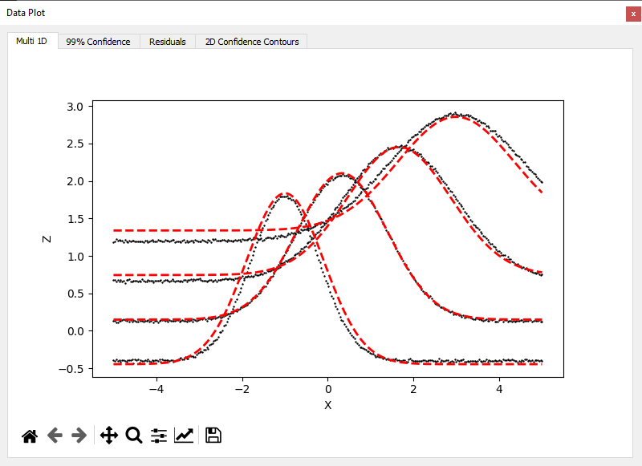

Fitting Multiple 1D Curves
This tutorial demonstrates how to use the multi 1D mode ("Fit per Y") to fit a model to a dataset composed of several 1D curves \(Z = f(X)\) at different values of \(Y\). This is useful when performing measurements over a sweep of control parameters and assuming a global model structure across curves.
Step 1 – Load the data
Use File > Load Data and select:
examples/data/multi1d_fit_tuto.csv
This dataset includes:
X: the sweep variableY: the secondary indexZ: the observed value for each combination of (X, Y)
After loading, the application automatically switches to 2D mode, and the Fit Strategy selector appears in the control dock.
Select the strategy:
Fit per Y (multi 1D)
Step 2 – Define the formula
We choose a Gaussian function with a linear baseline:
z = a * exp( -0.5 * (( x - ( b * y )) / ( c + d * y )) **2 )/(( c + d * y ))+ e * y
The formula must contain both x and y. In multi-1D mode, y is treated as a fixed variable for each slice of data. If the formula does not include y, the fit will fail or produce incorrect results.
This model will be applied to each Y-slice (i.e., to each \(Z = f(X)\) curve) using a global fit: all data points across all Y are used, but each Y is treated as an independent instance of the model.
Step 3 – Run the fit
Click Fit in the fit control dock. The application will:
- Fit all curves jointly using the selected method (default:
lmfit) - Display one curve per Y in the Data + Fit tab
- Enable 1D confidence bands and residuals for each curve
You can also change the method to:
odrfor orthogonal error regressionemceefor Bayesian sampling
If using emcee, it's recommended to first run a classical fit to improve convergence.

Step 4 – Explore the results
Use the toolbar or right-click menu to display:
- 99% Confidence Interval for each curve
- Residuals (difference between data and fit)
- 2D Contours: For emcee fits, posterior correlations between parameters
- Fit Report: Dock displaying values of the parameters and goodness-of-fit metrics
Notes
The model assumes each curve follows the same formula (same parameters across all Y)